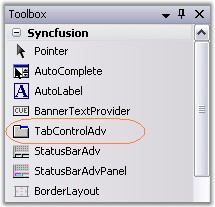
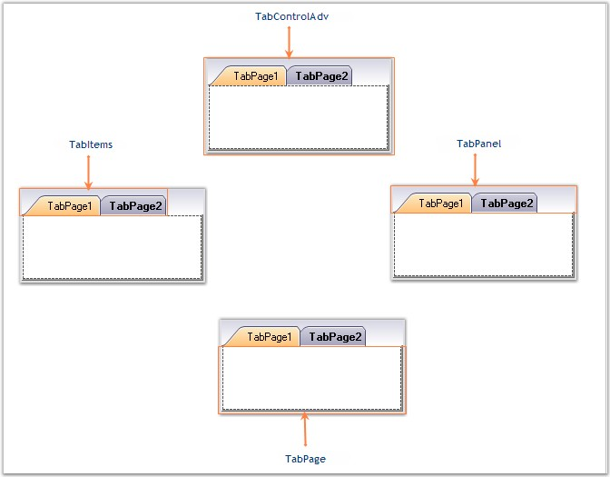

TabControlAdv in Toolbox
TabControlAdv is a control in the Tabs Package that manages a set of TabPages and provides options to customize the TabPages according to the needs of the user.

Figure 1032: TabControlAdv in Toolbox
The TabControlAdv automatically adds pages to every tabitem being added to the application with uniform dimensions for all the pages.

Figure 1033: Different Sections of TabControlAdv
TabPanels
TabPanels are used to switch between the various tab pages / tab items in the TabControlAdv.
TabItems
TabItems are items added to the TabControlAdv by default when a tabpage is added. Unlike the usual items, the tabitems when clicked, provide access to the respective tabpages and does not contain any event to hold the user written code.
TabPages
TabPages are the pages included in the TabControl. The TabPages are laid one above the other and only a single tabpage can be viewed at a time. Each page acts as a ContainerControl and can host ChildControls within it using the TabPageAdv panel-derived class.
The TabPageAdv can be added to the TabControlAdv through designer as well as through code.
See Also
Creating a TabControlAdv Through Designer, Creating a TabControlAdv Programmatically